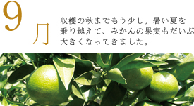
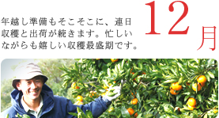

そびえる段々畑の石積みや、当たり前のように築100年以上にもなる家々を目の前にして、
私たちはどのような地域像・ビジョンを描くのか。
自ずと浮かんでくるのは泥んこになりながら山を上り下りする息切れのしそうな農業、
しかしそれは特権でもあります。
愛媛県西予市明浜町は、四国の西南部、松山から約2時間ほど
車を走らせた場所にあります。東西に細長いリアス式海岸で
宇和海を南に臨んでいます。
明浜町の入り口でもある野福トンネルを抜けると、山上から
宇和海と集落と急斜面のみかん畑を一望できる絶景が広がります。
ここにはコンビニは一軒もなく、信号機は点滅信号が一つだけ。
車一台が走れるぐらいの細い国道が通っています。
海岸には漁船が泊まり、カモメの声が響きます。
集落は入り組んだ湾の奥に点々と
あり、東から俵津、渡江、狩浜、
高山、宮之浦、田之浜と呼ばれています。
平地が少ないため家々が密集し、集落の
裏手には段々畑が山沿いにびっしりと、
海岸沿いの急斜面にまで広がります。
-
明浜町の玄関口。急傾斜のみかん畑と宇和
海が一望できる野福峠からの景色は一見の
価値あり。峠道にそって桜並木があり、お
花見シーズンのドライブは天国気分。 -
畑を築かず、自然林の残した一帯。江戸時
代からの言い伝えに「ここの木を切ると周
りの海で魚が獲れない」というものがあり、
今も受継がれている。 -
漁師の佐藤吉彦さんを頭として、漁から袋
詰め、販売まで行う。まろやかな口当たり
は、ミネラル豊富な海水で茹でているから。
魚付保安林やワカメ養殖など、海の環境保
全にも奮闘中。 -
狩浜の海は水質が良く、巻きが良く深みの
ある色合いの真珠を生む。
祇園丸と協力し、ワカメ養殖による海の緑
化活動も行っている。 -
威徳院源界法院をまつった祠。３００年前
に狩浜に塾を開いて多くの師弟の教育にあ
たった功績は大きく、唱えた教えが石碑に
刻まれている。 -
本浦地区と枝浦地区の間に建立されている
神社。10月第4土曜日にあるお祭りは、
牛鬼、五ツ鹿、巫女の舞、御舟組などが
伝統的な様式を守って行われている。 -
狩浜の特徴は石灰岩で組み上げた段々畑。
白い石垣が独特の美しい景観を形作って
いる。
この段々畑に無茶々園の農家の主要な園
地が集まっている。 -
35年前、廣福寺の裏にある畑で無農薬の
伊予柑を栽培し、その園地を無茶々園と
呼んだことが無茶々園のはじまりとなった。 -
1991年の台風被害をきっかけに作られた
神社。みかんの神様である「田道間守
（たじまのもり）」が祭られており、毎年
4月初めに今年1年の安寧を祈願する。 -
無茶々園の明浜事務所があるお伊勢山。
法華津湾に突き出した岬の先端は、アジ
やグレなどの魚が一年を通して釣れる絶好
の釣り場となっている。 -
山中に大石積みがあり、馬が転ぶくらいの
急傾斜からマッコロバシと呼ばれている。
高さは8.5ｍあり石積みによって生みださ
れた平地は水田として昭和40年代まで利用
されていた。 -
塩風呂や民宿、キャンプ場、加工場がある
第3セクター。ここにある加工場に無茶々
園のジュースやマーマレードの製造を委託
している。 -
全国でも唯一の、河童が鯛を抱えている姿
を模した狛犬。「宇和旧記」などに記され
ている河童の恩返しを現したもので、地元
の人はエンコ様と呼んでいる。 -

田の浜地区の生産者が手作りで建てた海の
家。毎週のように集まり、ビールを片手に
その日取れた魚やイノシシなどを食べる。
カラオケの設備もあり演歌調の歌が夜の宴
を盛り上げる。

○ お正月・初詣 ○ 町内駅伝大会
● 伊予柑、ポンカンの出荷（2月まで）
● 不知火（デコポン）の収穫
◎ 北条の大根収穫（2月まで）
○地区文化祭 ○少年の日（少年式）
●園地・防風林の整備
○崇敬講 ○歩け歩け明浜海道
●剪定作業（4月まで） ●苗木の植えつけ
●甘夏の収穫・出荷（5月まで）
◎キヌサヤの収穫本格化（4月まで）
○お伊勢踊り ○客人神社、春の祭典
○野福峠さくら祭り ○奉納相撲（田之浜地区）
●草刈り作業（10月まで）
●芽かき、摘花作業（5月まで）
○ちりめん村（小学校の通学合宿）
●苗木・幼木の手入れ（10月まで）
◎そら豆の収穫 ◎梅の収穫（6月まで）
○地区共同作業（農道道作り）
●粗摘果作業（9月まで）
◎北条の玉ねぎ収穫
○町内一斉清掃 ○祇園さま祭り
○盆踊り ○歌舞伎くずし盆踊り（渡江地区）
◎アイガモ米の収穫

○各地区運動会
●仕上げ摘果作業（10月まで）
○秋祭り
●温州みかんの収穫・出荷（１２月まで）
○亥の子 ○ふるさと芸能祭 ○春日神社新嘗祭

○注連縄作り、年越し準備
●伊予柑、ポンカンの収穫（１月まで）